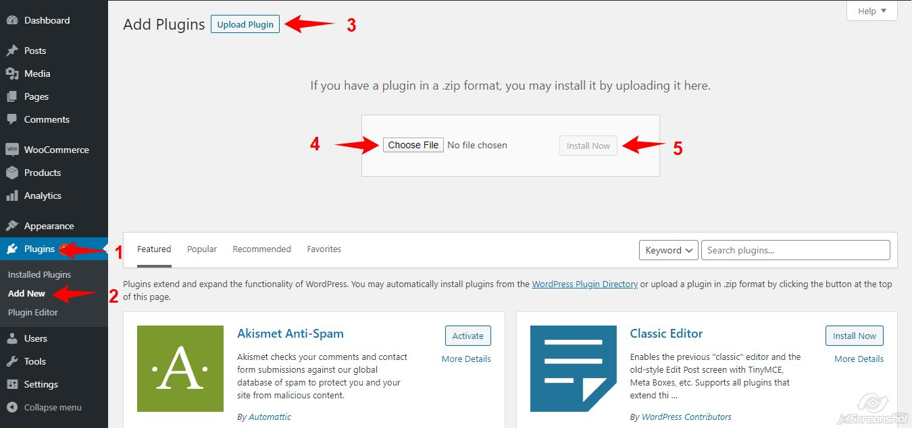
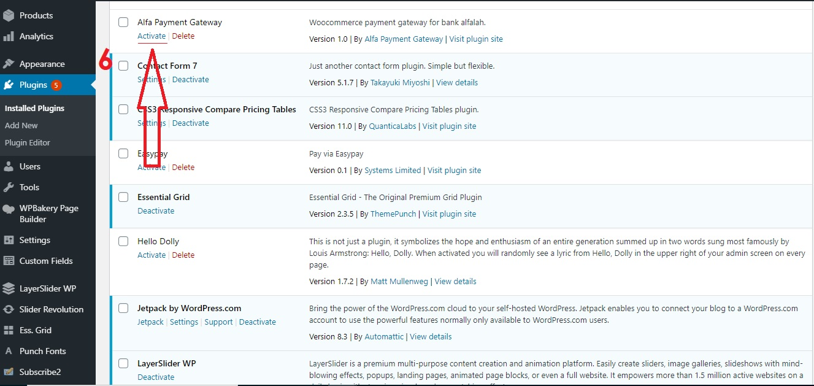
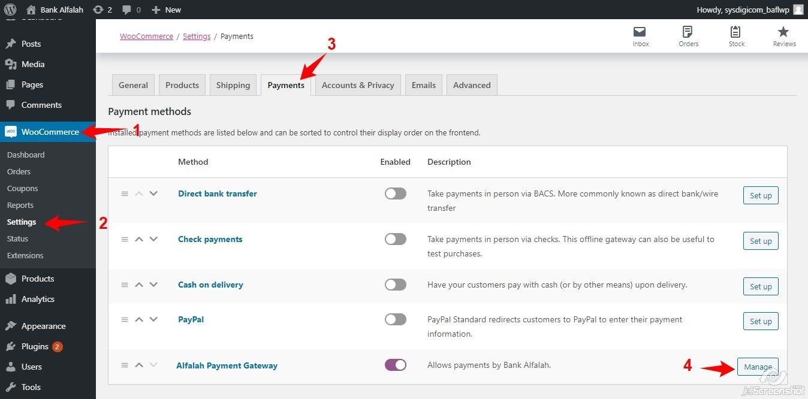
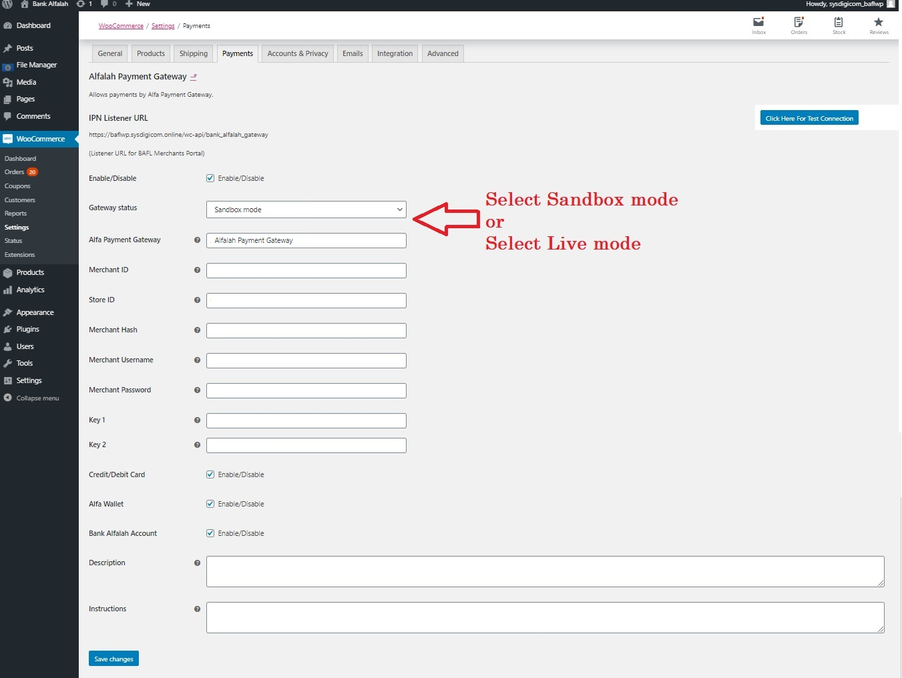
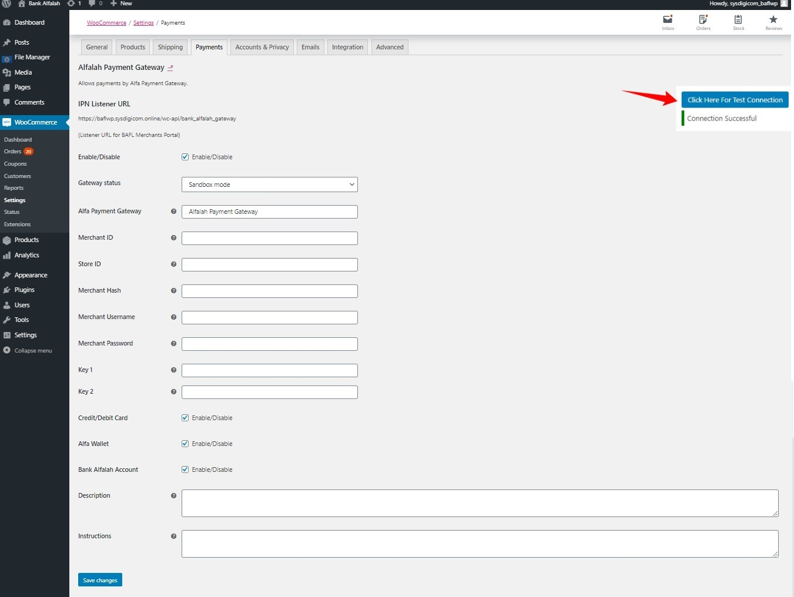
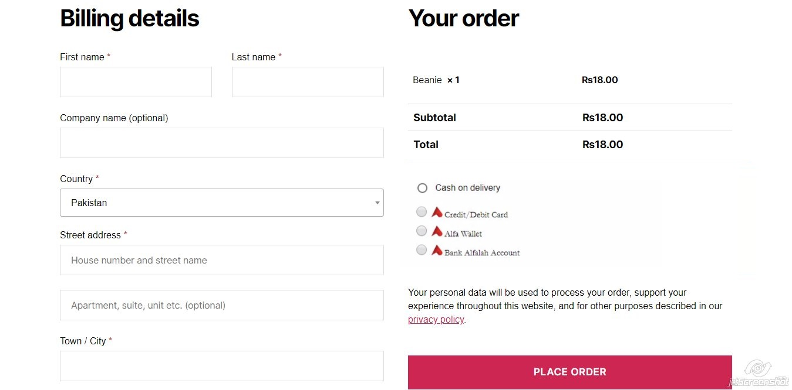

About Plugin
The Alfa Payment integration plugin for WordPress WooCommerce provides a seamless and highly secure integration with the Bank Alfalah Alfa Online Payment System in Pakistan. It empowers eCommerce merchants to instantly accept digital payments directly into their accounts via multiple channels.
This customized edition resolves critical legacy vulnerabilities, fixes modern hosting timeouts (including Hostinger / OpenSSL 3 cURL EOF bugs), implements full High-Performance Order Storage (HPOS) compatibility, and provides a multi-channel payment experience.
Key Features & Payment Channels
Merchants can enable or disable any of the following payment channels directly from the WooCommerce gateway settings:
- 💳 Credit / Debit Card (Visa/MasterCard): Accept global card payments.
- 📱 Alfa Digital Wallet: Direct payment from registered Bank Alfalah Alfa Mobile Wallets.
- 🏦 Bank Alfalah Account: Direct debit from Bank Alfalah bank accounts.
- 🕌 Alfa BNPL Islamic: Buy-Now-Pay-Later Shariah-compliant installment facility.
- 📦 Card On Delivery: Post-dated card charge on physical delivery.
- ⚡ Raast QR: Instant mobile wallet checkout via Raast.
Additionally, this plugin features an isolated Admin Test Connection Tool that allows merchants to verify API connectivity instantly without processing real orders.
Security Hardening & Critical Fixes
This edition incorporates extensive architectural, performance, and security enhancements developed and maintained by the author:
1. Security & Vulnerability Resolutions
- SSRF & Order Spoofing Prevention: Strict integer sanitization, order ownership verification, and secure internal API URL composition on the IPN listener endpoint.
- Admin Endpoint Hardening: Enforced `manage_woocommerce` capability checks and nonce verification on the Test Connection AJAX endpoint.
- Timing-Safe Key Verification: Order validation on the Thank-You page now utilizes `hash_equals()` to prevent spoofing.
2. OpenSSL 3.x & cURL Reliability
Shared hosting environments (e.g., Hostinger, SiteGround) running PHP 8.1+ with OpenSSL 3.x often experience `cURL error 56: SSL_read: unexpected eof` during bank handshakes. This plugin forces PHP Streams transport fallback and incorporates automatic single-retry mechanisms to guarantee reliability.
3. WooCommerce Modernization
- HPOS Compatibility: Deprecated `get_post_meta()` and `update_post_meta()` calls have been replaced with HPOS-compliant WooCommerce CRUD methods (`$order->update_meta_data()`).
- Admin Resource Isolation: JavaScript and CSS assets are now loaded only on the gateway settings page to preserve admin dashboard performance.
- Centralized Logging: All API communication errors, SSL fallbacks, and webhook responses are logged directly to WooCommerce > Status > Logs.
Installation Guide
To install the Alfa Payment Gateway WooCommerce Plugin, follow these steps:
- Login to your WordPress Admin dashboard.
- Navigate to Plugins » Add New.
- Click on the Upload Plugin button.
- Select the provided
bank-alfalah.zipfile and click Install Now. - Once installed, click Activate Plugin.

Uploading the plugin via WordPress Admin
Activating the installed pluginMerchant Configurations
After activation, the plugin must be configured with your Bank Alfalah credentials. Navigate to WooCommerce » Settings » Payments » Alfa Payment Gateway (Click Manage).

Locating the Gateway in WooCommerce SettingsOn the configuration screen, you will need to input the following details provided by your Bank Alfalah Merchant Relationship Manager:
- Merchant ID
- Store ID
- Merchant Hash
- Merchant Username & Password
- Key 1 & Key 2 (AES Encryption Keys)

Entering your Merchant CredentialsCopy the IPN Listener URL displayed at the top of the settings page (e.g.,
https://yourdomain.com/wc-api/bank_alfalah_gateway) and provide it to Bank Alfalah so they can
configure automated background status updates.
Testing Your Connection
At the bottom of the settings page, click the Click Here For Test Connection button. The plugin will attempt a secure handshake with the bank.

A successful API Handshake testCheckout Experience
Once configured and saved, the Alfa Payment Gateway will appear dynamically on your checkout page. The plugin intelligently manages mutually exclusive radio buttons to ensure smooth integration alongside other payment gateways like Cash on Delivery.

Customer view at checkoutUpon clicking "Place Order", the customer is securely redirected to Bank Alfalah's encrypted portal to complete their transaction.
Architecture & Data Flow
The communication between your WooCommerce store and Bank Alfalah relies on military-grade AES-128-CBC encryption and strictly structured API payloads.
- Step 1 (Checkout): The customer selects a payment method and places the order.
- Step 2 (Handshake): WooCommerce securely POSTs an encrypted handshake request to Bank Alfalah. The plugin natively retries this request if an OpenSSL TLS teardown occurs.
- Step 3 (SSO Redirect): The bank returns a secure AuthToken, and the customer is redirected to the bank's portal.
- Step 4 (IPN / Return): After successful payment, the customer is redirected to your Thank-You page, and the Bank asynchronously fires a secure webhook (IPN) to update the order status to "Processing".
👤 Author & Developer
This modernized, security-hardened edition of the Alfa Payment Gateway is developed and maintained by Amanullah Khan.